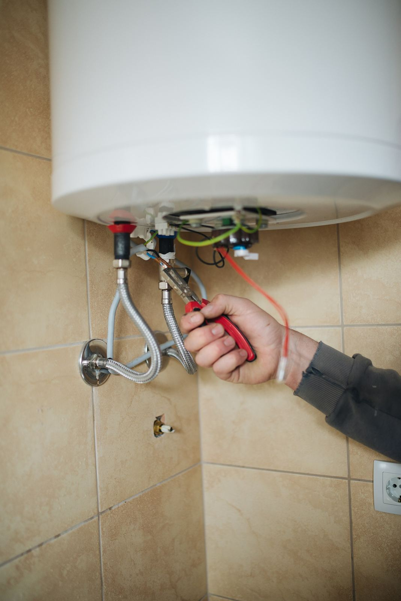
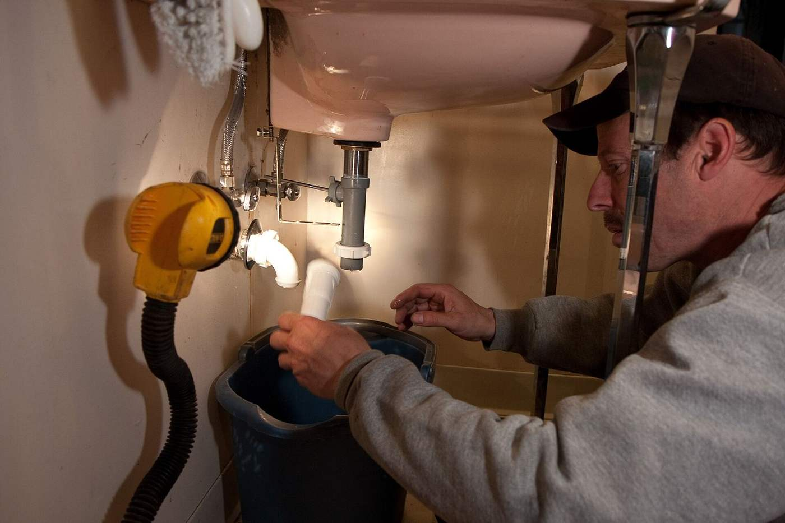
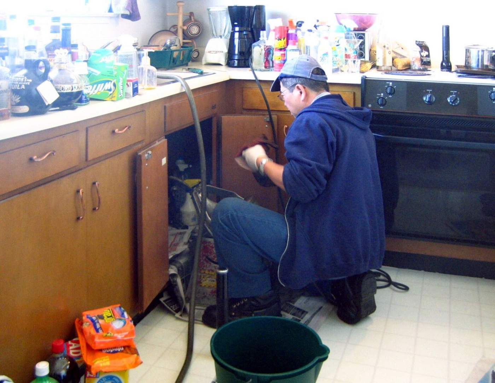

Leak repair, drains, water heaters and line work for Hutchinson homes. Rated 4.3★ from 40 Google reviews.
Leaks found and fixed fast.
Clogs cleared for good.
Repair and replacement.
Line repair and replacement.
Faucets, toilets and disposals.
Fast help when something breaks.


Gibby's Sewer and Drain serves Hutchinson, KS and nearby communities from 1110 N Halstead St. Customers rate them 4.3 out of 5 across 40 Google reviews.

“We have had the opportunity to work with Gibby's Plumbing a few times, and every time they are professional, kind, and helpful. The last month we have been trying to fix a plumbing issue and they have been so patient in working with us to diagnose…”
“Just want say thank you!!! You guys rock!! Always come when you say your coming and seem to always be able to fix the problem, even when we have to replace the whole sewer line. I will never call anyone else. Can't express my gratitude enough!”
“Gibby's was amazing! Quick to get to me and friendly! They made my dog beam with making 2 new friends! They kept me posted on what they were doing, answered my questions and were quite affordable! I recommend them so much!!!”
1110 N Halstead St, Hutchinson, KS 67501.
Monday: 8 AM – 5 PM; Tuesday: 8 AM – 5 PM; Wednesday: 8 AM – 5 PM; Thursday: 8 AM – 5 PM; Friday: 8 AM – 5 PM; Saturday: Closed; Sunday: Closed.
Call (620) 200-0609.
Yes. It is rated 4.3 stars from 40 Google reviews.
1110 N Halstead St, Hutchinson, KS 67501